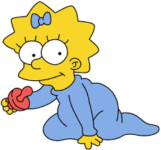

Maggie
Maggie é a filha mais nova de Homer e Marge , e a irmã mais nova de Bart e Lisa . Freqüentemente, ela é vista chupando a chupeta vermelha e, ao caminhar, tropeça na roupa e cai de cara no chão (essa mordaça de corrida é muito mais usada nas temporadas anteriores). Sendo uma criança, ela ainda não aprendeu a falar. No entanto, ela apareceu para falar no primeiro curta do Tracey Ullman Show .
 >Personalidade
Infância:Com 8 anos, Maggie se vê parecida com a Lisa. Na sua infância Maggie foi de férias para o Alaska, que estava mais quente devido ao aquecimento global.
Adolescência:Maggie é vista como uma adolescente punk. Diz-se que ela tem uma bela voz para cantar e, de acordo com Homer, nunca se cala (ironicamente, quando ela tenta falar, ela é sempre interrompida). Ela também gosta de brincar muito com seus amigos e familiares. Aos 18 anos ela ganha uma guitarra e, um ano depois, forma uma banda com 3 homens, ficando superfamosa.
Vida Adulta:É revelado que ela se casa com Gerald Samson, e eles têm uma filha chamada Maggie Jr, uma bebê igualzinha a ela quando bebê. Em Fim de ano do Futuro Passado, Maggie cresce para ser uma cantora e tem seu bebê enquanto visitam a família.